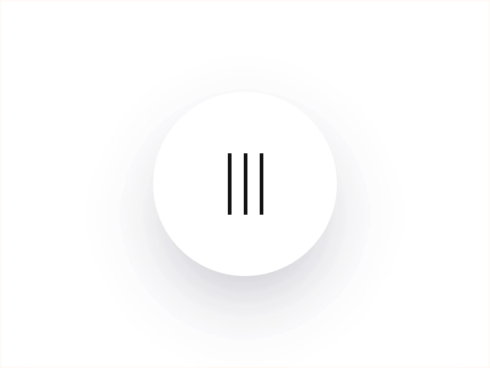
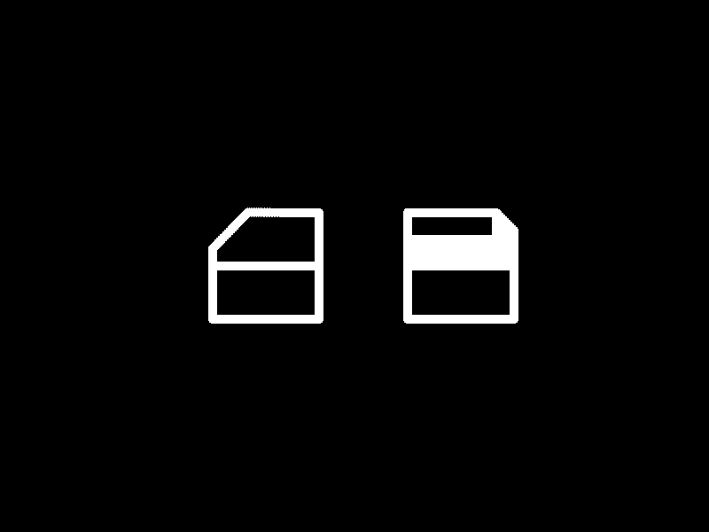
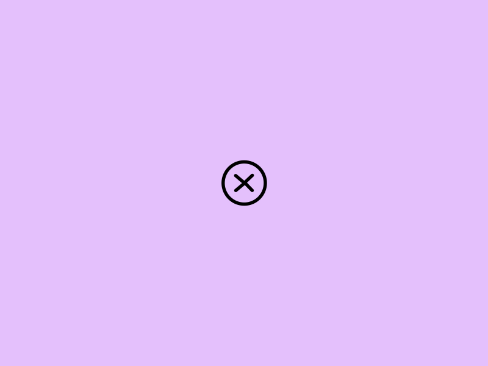

Microinteractions
Ellis van Unen Stef Rullens
"A microinteraction is any single task-based engagement with a device."

Hamburgers in motion
Keep your eye on the I…X…III…
Dude, where’s my disk?
Car windows, micro-sim cards, or disks? Either way — delightful interaction
Draw it out
Explore icon animation as a way of calling attention and adding delight.
Waarom dan die microinteractions?
Microinteractions zorgen ervoor dat een product de transitie maakt van een statisch ontwerp naar een menselijk ontwerp waar een gebruiker een menselijke vorm van interactie mee voelt.
Het belangrijkste bij microinteractions is het simpel houden. Het moeten kleine interacties blijven die de gebruiker niet teveel afleiden maar juist het gevoel geven van menselijkheid. Met klein bedoelen we dan ook echt klein, microinteractions duren gemiddeld maar 300ms.

In welke fase van het ontwerpproces? Meestal wordt er pas over microinteractions nagedacht aan het einde van het ontwerpproces. Pas nadat het eindontwerp staat kijken de UX-designers en de Interaction designers naar de mogelijkheden binnen het ontwerp. Er zijn echter wel voorbeelden waarbij bureau’s binnen het brandbook van een merk alvast opzetten hoe deze zich dmv motion weergeven. Er kan dus al wel van te voren afspraken gemaakt worden over hoe iconen binnen een merk microinteractions met zich meedragen.
Hoe maak je dan zo’n micro interaction?!
Microinteractions bestaan uit vier delen: de trigger, de regel hiervan, de feedback en de loops & modes.
- De trigger is actie die de micro interaction in gang zet, dit kan zowel gebeuren door een actie van de gebruiker of van het product. Het product bepaald wanneer de micro interaction in gang wordt gezet door te kijken naar vooraf opgestelde criteria.
- De regels die zijn opgesteld bepalen wat er gebeurd binnen het product wanneer de micro interaction in gang is gezet/ is getriggerd.
- Belangrijk is dat de gebruiker door middel van de microinteraction op de hoogte wordt gehouden wat er gebeurd, het feedbackmoment.
- De microinteraction kan hierbij inspelen op alle verschillende zintuigen, omdat iedere verandering een vorm van feedback is. Het laatste deel bestaat uit de loops & modes, dit zijn de uiteindelijke meta-rules die bepalen wat er gebeurd met de micro interaction wanneer de condities zijn veranderd.
Welke handelingen

Maak een storyboard
Waarna je een micro-interaction hebt bedacht moet dit idee natuurlijk overgedragen worden. Hier zijn verschillende manieren voor, waarvan een storyboard de meest gemakkelijke.
Hiernaast is een voorbeeld te zien van een ontwerper die zijn micro-interaction door middel van een whiteboard en een stift weet vorm te geven voor zijn team.
Hij schetst simpelweg de verschillende vormen die zijn UI tijdens de interaction aanneemt en laat hierbij andere kenmerken zoals de transitie-snelheid vast.

Skeleton Interaction
Een Skeleton Interaction lijkt al meer op een daadwerkelijk prototype en wordt dan ook meestal vergeleken met een wireframe. Hierbij wordt de UI met de bijbehorende interactie op een laagdrempelige manier vorm gegeven,
zodat snel duidelijk is wat de micro-interaction precies inhoudt. Door een skeleton interaction te maken kan op snelle manier precies vormgegeven worden wat de visie van de ontwerper is.

Interaction Guide
Een interaction guide is een wat statische vormgeving van een micro-interaction en wordt veelal vergeleken met een styleguide. Dit bestand lijkt op een digitaal uitgewerkt storyboard die laat zien welke uitingen een UI aanneemt tijdens de interaction.
Hierbij wordt belangrijke informatie over de styling gegeven zoals kleurcodes en typefaces, maar ook de transitie-tijden worden hierin vermeld.
Tools voor designer
Wat je als ontwerper het beste kunt doen om je ontwerp over te dragen is een daadwerkelijk prototype te maken. Hier zijn verschillende software voor te gebruiken. Voor een snel laagdrempelig ontwerp zouden wij Figma, Sketch of Adobe XD aanraden. Hierbinnen zijn een aantal protis votype features die snel een laagdrempelige micro-interactionkunnen vormgeven. Daarnaast zijn er voor Mac ook Origami en Principle die je als ontwerper iets meer vrijheid geven binnen je ontwerp. Maar als je echt volledige vrijheid wilt hebben raden wij toch uiteindelijk Adobe After Effects aan om je interaction vorm te geven.
Tools voor developers

Waar de developer uiteindelijk mee aan de slag gaat is geheel zijn keus. Wel weten wij dat zij meestal voor mobiel Xcode of Android Studio gebruiken, voor web en mobiel wordt meestal Framer gebruikt en voor alleen websites zien we meestal CSS en JavaScript. Als je echt heel erg enthousiast bent over Micro-Interactions is het wellicht verstandig om naar een van deze systemen te kijken zodat je ook wat beter weet waar de developer uiteindelijk inhoudelijk mee aan de slag gaat.
Guidelines
Er zijn een aantal guidelines om micro interactions van huidige websites te verbeteren of die je kan gebruiken wanneer je met het ontwerpen aan de slag gaat.
- Keep them informed
- Keep it simple
- Go smooth
- Focus on the emotions
- Be predictable
Literatuur
Cousins, C. (2015, 17 augustus). Why micro-interactions are the secret to great design [Blogpost]. Geraadpleegd op 15 november 2019, van https://thenextweb.com/dd/2015/08/17/why-micro-interactions-are-the-secret-to-great-design/
Batchu, V. (2018, 12 april). Micro-interactions: why, when and how to use them to improve the user experience [Blogpost]. Geraadpleegd op 20 november 2019, van https://uxdesign.cc/micro-interactions-why-when-and-how-to-use-them-to-boost-the-ux-17094b3baaa0
Kim, K. (2017, 16 augustus). Bringing Micro-Interaction & UI Animation to Life Through Developer–Designer Collaborations [Blogpost]. Geraadpleegd op 23 november 2019, van https://medium.com/capital-one-tech/bringing-delightful-micro-interaction-and-ui-animation-to-life-through-developer-designer-3c409bc326f
Fanguy, W. (2018, 28 februari). How microinteractions improve your UX design [Blogpost]. Geraadpleegd op 22 november 2019, van https://www.invisionapp.com/inside-design/use-microinteractions-improve-ux-design/
Willenskomer, I. (2016, 27 april). 5 Mistakes to Avoid When Designing Micro-interactions [Blogpost]. Geraadpleegd op 22 november 2019, van https://medium.com/ux-in-motion/5-mistakes-to-avoid-when-designing-micro-interactions-a6f638ee6a86